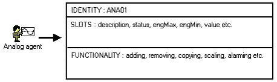

The Agent Server is the storage facility for all agents. For details, see About Agent Servers.
Agents are called agents because, instead of only containing data, like simple database records, they also usually contain the ability to operate or act on their own data, driving its values and to read and write to other objects, and so influence them.
This concept is very much in line with object-oriented thinking, and is primarily why we refer to Adroit as being "object-oriented".
Note: When referring to a data value within an agent this is often referred to as a tag. For details, see Agents, Slots, Tags and their relation to Values.
Agents are classified by function into a number of agent types, which can be used to implement a wide variety of system related, as well as application-specific tasks. For details, see About Agent Types.
For example, the Analog agent type is used to handle the signal conditioning and alarm checking requirements of a process variable, and the DataLog agent type is responsible for creating, maintaining, and accessing historical data logs.
An agent is therefore, more correctly, an instance of an agent type, for example an instance of the Analog agent type could be the TANKLEVEL Analog agent (assuming that this agent has been created by a user).
Each of these agent types have well defined rules for interfacing with other agents ensuring that an extremely robust and versatile environment has been created to handle any real world situation.
For this reason each Adroit agent can be dynamically configured to benefit from specific functions provided by other agent types, such as scanning (Communicating Values), alarming (Alarming Values) and logging (Logging values).
The interaction of these agents with each other as well as with the Classic User Interface and its picture objects, provides a powerful and dynamic monitoring and control capability which reflects the status of your process in real-time.
For each agent type, there may be zero, one or many agent instances. Each time you add an agent, you are creating a new agent instance, however, agent instances are simply referred to as agents.
Every agent, with the exception of the agents that are automatically created or dynamic agents like Proxy and Scan agents, are stored in an Adroit database (.WGP) file. For details, see About Adroit Database Files (Agent Storage).
All agents have three essential characteristics, namely:
Note: The overall status of an agent can be determined from its status slot, which is common to all agent types. For details, see Agent Status.
